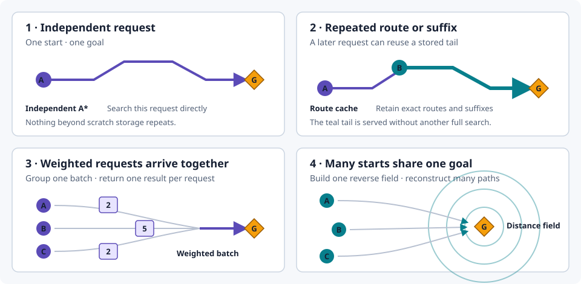
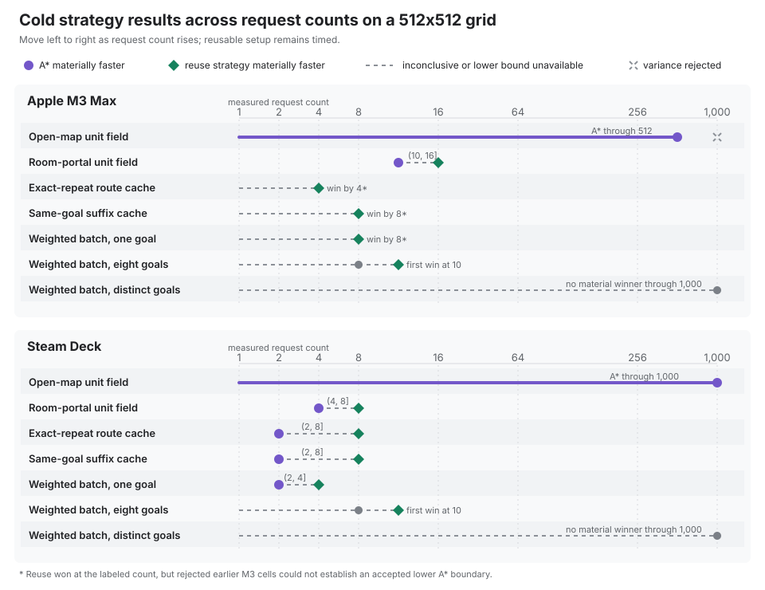

A* vs route caches, batches, and distance fields
Pathfinding performance is rarely about choosing one universally fastest algorithm. It is about recognizing repeated work. Does the same route recur? Do many agents share a goal? Do weighted path requests arrive together? Or is every path request genuinely independent? tess exposes a different call shape for each case, letting an application reuse only the work its own workload repeats.
What a request means
A request is one path query: one start, one goal, and one resulting path or failure. It is not the same thing as an agent. One agent can issue many requests, and a benchmark can repeat the same request. A request count is the number of query entries handled by one measured operation. The evidence reports unique-start counts separately and, for weighted batches, unique-goal counts.
This page connects those choices in three stages. First, a small 16x16 example makes the four call shapes visible on the same obstacle course. Next, controlled 512x512 benchmarks measure when the cost of creating or retaining reusable work is repaid. Finally, self-checking C++ excerpts show how each call shape is expressed in code. The example teaches the choices; the benchmark campaign supplies the timing evidence.
If you arrived looking for flow fields, jump to how distance fields relate to them and what the benchmark does—and does not—measure.
The short answer
The four choices differ in where repeated work appears:

| Workload | Start with | What is reused |
|---|---|---|
| One-off requests or mostly distinct goals | astar_path |
Search scratch only |
| Exact or same-goal suffix routes repeat | cached_astar_path |
Stored routes |
| Weighted requests arrive together | weighted_path_batch |
Work within the batch |
| Many starts share one unit-cost goal | distance field | One reverse search tree |
Route caches, weighted batches, and the two-call distance-field API all support dense and sparse-resident worlds. Persistent distance-field products are a different, dense-only family. The pathfinding decision guide covers that residency boundary and the full API selection tree.
See the call shapes on one small world
The interactive example sends three requests through one 16x16 obstacle course. Each card solves a comparable routing problem but organizes the work differently: independent A* repeats the search, the cache retains a route, the batch groups requests arriving together, and the distance field labels the reachable world once for a shared goal. The cache card repeats its first request so its reuse is visible.
The animation shows call order and data products, not benchmark timing or a search frontier that the APIs do not report. Here, comparable requests return the same routes. The distinction to watch is the work each strategy keeps or shares.
Open the strategy demo in a separate page.
The example establishes what can be reused, but it cannot show when reuse is worth its setup cost. Building a field, populating a cache, or grouping a batch can cost more than it saves at low request counts. The benchmark campaign therefore repeats these workload shapes at increasing counts and records where reuse begins to outperform independent A*.
When reuse pays for itself
The campaign below measures logically cold strategy work with reusable storage pre-reserved and the harness warmed once outside timing. Route-cache logical state is cleared; cache population and distance-field construction stay inside the timed operation. Every pair receives the same world and request array, and untimed checks require matching status, endpoints, legal steps, and path cost.
The controlled campaign ran from commit fcaa2165a8bd on an Apple M3 Max and
an affinity-pinned Steam Deck. It found small, workload-specific crossovers,
not one agent-count rule:
Read each lane from fewer to more requests. A purple circle marks an accepted count where independent A was materially faster; a green diamond marks one where the reuse strategy was materially faster. A pair brackets a crossover. A lone green diamond means that reuse won but no lower A boundary was accepted, while a gray lane means that no material winner was established.

The practical takeaways are simpler than the individual cells:
- Open map: building a field did not pay back. A* still won at the largest accepted count on each machine.
- Room portals: the field paid back between 10 and 16 requests on the M3, and between 4 and 8 on the Steam Deck.
- Repeated routes: exact and same-goal suffix caches paid back at low request counts on both machines.
- Weighted batches: one shared goal paid back quickly. With eight goals, the first clear batch win was at 10 requests on both machines.
- Distinct goals: neither approach materially won through 1,000 requests.
A bracket such as (4, 8] means A* won at 4 and reuse won at 8; it is not an
exact threshold. Only accepted cells support the conclusions. Forty of 91 M3
cells exceeded the 5% variation limit, including the 1,000-request open-map
cell, and were excluded. All 91 Steam Deck cells passed.
How operation time scales
The crossover ladder shows where the winner changes; the curves below show how whole-operation CPU time scales. They cover three illustrative reuse-rich workloads: one field, cache, and weighted-batch case. The summary above retains the open-map and distinct-goal counterexamples. Hover, focus, or tap a plot for exact measured values; hollow M3 cells are excluded from crossover decisions.
Open the scaling chart in a separate page.
Representative operation times
The following accepted cells give a rough sense of scale. Each value is median CPU time for one complete measured operation, not time per request. Cold field construction, cache population, and batch grouping are included. Each platform cell shows independent A* / compared strategy.
| 512x512 workload (requests) | M3 Max | Steam Deck |
|---|---|---|
| Open-map unit field (512) | 1.08 / 5.13 ms | 2.87 / 8.97 ms |
| Room-portal unit field (16) | 2.85 / 2.27 ms | 12.3 / 4.87 ms |
| Exact-repeat route cache (16) | 20.9 / 5.86 us | 45.7 / 13.2 us |
| Same-goal suffix cache (8) | 10.5 / 4.65 us | 22.7 / 12.1 us |
| Weighted batch, one goal (10) | 11.4 / 5.23 ms | 22.3 / 9.57 ms |
| Weighted batch, eight goals (10) | 35.2 / 28.2 ms | 69.4 / 53.3 ms |
| Weighted batch, distinct goals (1,000) | 1.41 / 1.41 s | 2.77 / 2.80 s |
These are platform-specific examples, not frame-time guarantees. Path length, topology, compiler, system load, and application work all affect production latency. Compare strategies within one platform, not absolute speed across the two platforms: their compilers and instruction sets differ.
Each comparison asks whether reuse repays its setup cost. The baseline runs one A* search per request. The reuse arm builds a field, populates a cleared cache, or groups the same requests into one weighted batch.
The primary 512x512 sweep uses request counts 1, 2, 4, 8, 10, 16, 32, 64, 100, 128, 256, 512, and 1,000. After a bounded preflight established headroom, the opt-in capacity sweep was extended to 131,072 requests and grids through 16,384x16,384. Capacity cells identify the largest completed rung under a declared time and memory budget; they do not deliberately drive a machine into an out-of-memory failure.
The capacity sweep found different operational envelopes under a 20-second per-process limit and conservative memory bounds:
| Axis | Apple M3 Max, 16 GiB watchdog | Steam Deck, 12 GiB address-space limit |
|---|---|---|
| Grid, most strategies | Completed the 16,384x16,384 test ceiling | Completed 8,192x8,192; 16,384x16,384 reached the controlled resource/time boundary |
| Grid, one-goal weighted batch | Completed 8,192x8,192; 16,384x16,384 timed out | Same bracket |
| Grid, eight-goal weighted batch | Completed 4,096x4,096; 8,192x8,192 timed out | Same bracket |
| Requests, room-portal A* | Completed 65,536; 131,072 timed out | Completed 16,384; 32,768 timed out |
| Requests, one/eight-goal weighted A* | Completed 4,096; 8,192 timed out | One goal completed 4,096 and timed out at 8,192; eight goals timed out at the first 1,000-request capacity rung |
| Requests, reuse-heavy arms | Completed the 131,072 test ceiling | Completed the 131,072 test ceiling |
“Completed the ceiling” is intentionally not called a platform maximum. The all-distinct request ladder is fixture-limited at 2,044 perimeter goals. At 131,072 requests, the one-goal weighted batch peaked near 6.0 GiB on M3 and 5.9 GiB on Deck, so the high-count results are throughput stress tests rather than frame-budget recommendations.
Timing is accompanied by A and unit-field expansions, reconstruction nodes, field builds, A fallbacks, cache hits, suffix hits, unique-goal counts, retained cache entries and path nodes, and dense field-page bytes. Weighted batches do not expose field expansions, so the comparison does not pretend that every arm has a common expansion counter. The report distinguishes requests from unique starts: high request counts are a throughput stress, not a claim that every request represents a distinct simulated agent. Field-product byte counts and warm replay remain in the existing product benchmarks because the transient two-call field and per-call batch API do not retain comparable products.
Map edits have a separate lifecycle question, so the crossover matrix does not multiply every cell by invalidation policy:
| Retained work | Edit behavior | Evidence reported |
|---|---|---|
| Exact route cache | Any world change clears the cache | Clears, misses, entries, and retained path nodes |
| Scoped-feasible route cache | Dense unit-cost worlds can preserve routes whose chunks did not change | Existing on-path and off-path edit benchmarks |
| Field product/cache | Product dependencies decide whether replay remains valid | Exact product and cache bytes plus warm replay timings |
| Transient field or batch | Nothing survives the call | No invalidation mode or invented retained-byte total |
Scoped-feasible reuse guarantees a legal route with truthful cost, not fresh optimality: an unrelated edit that opens a shortcut can leave a previously optimal route suboptimal. Sparse worlds retain whole-world sensitivity.
Run the controlled comparison on a target machine with an environment metadata file and a memory limit appropriate to that host:
cmake --preset bench
cmake --build --preset bench --target tess_bench_path_strategy_crossover
python3 tools/path_strategy_campaign.py primary \
--binary build/bench/bench/tess_bench_path_strategy_crossover \
--source bench/tess_path_strategy_crossover_bench.cc \
--environment environment.json \
--output path-strategy-results.json \
--memory-limit-gib 12
The driver interleaves paired arms in fresh processes, checkpoints each cell,
and rejects an unstable cell from crossover calculation. Its separate
capacity mode runs ascending grid and request ladders with per-process time
and address-space limits, then stops a ladder at its first incomplete rung.
The decision remains workload-specific: inspect both timing and counters, and
retain the simpler API when the measured benefit does not justify another
invalidation or grouping lifecycle.
See the campaign method and normalized evidence before using a bracket for a production decision.
Implement the four call shapes
The measurements narrow the choice, but a crossover bracket does not show how to call an API. The following excerpts translate the four reuse patterns into C++ using the same 16x16 world shown above. The complete self-checking example compiles and runs in CI, and each excerpt is rejected by CI if it drifts from that source.
One world, one request set
The example uses three solid vertical walls with alternating single-tile gaps. Every passable tile has unit cost, so each strategy must solve the same visible obstacle course and the returned costs remain comparable. The demo model copies each borrowed path before the next scratch mutation so the browser reads read-only C++ result snapshots.
struct PassableTag {};
struct CostTag {};
using WeightedMovement =
tess::movement::PositiveCostFieldMovement<PassableTag, CostTag>;
using Shape = tess::Shape<tess::Extent3{16, 16}, tess::Extent3{8, 8}>;
using Schema = tess::FieldSchema<tess::Field<PassableTag, std::uint8_t>,
tess::Field<CostTag, std::uint32_t>>;
using World = tess::AlwaysResidentWorld<Shape, Schema>;
[[nodiscard]] constexpr auto demo_tile_passable(std::int64_t x, std::int64_t y)
-> bool {
if (x == 4) {
return y == 4;
}
if (x == 8) {
return y == 11;
}
if (x == 12) {
return y == 6;
}
return true;
}
constexpr auto kGoal = tess::Coord2{15, 15};
constexpr auto kRequests = std::array{
tess::PathRequest{tess::Coord2{0, 0}, kGoal},
tess::PathRequest{tess::Coord2{0, 1}, kGoal},
tess::PathRequest{tess::Coord2{0, 2}, kGoal},
};
Independent A*: the default
Plain A* is the baseline when requests do not share useful work. The example runs all three requests independently and reuses only scratch storage; it does not reuse search results. Do not introduce a cache or field until measurements show repeated structure.
tess::PathScratch scratch;
for (std::size_t index = 0; index < kRequests.size(); ++index) {
const auto result =
tess::astar_path<World, PassableTag>(world, kRequests[index], scratch);
snapshot.requests[index] = copy_result(result);
}
Use it when goals are mostly distinct, the map changes too often for retained routes to survive, or the request count is small enough that the direct call is already below the application budget.
Route cache: repeated paths on an unchanged map
cached_astar_path stores exact routes and same-goal suffixes. A first request
still performs A*; a repeat can return without expanding search nodes.
tess::PathScratch scratch;
tess::UnitRouteCache cache;
const auto first = tess::cached_astar_path<World, PassableTag>(
world, kRequests.front(), scratch, cache);
snapshot.requests[0] = copy_result(first);
const auto repeated = tess::cached_astar_path<World, PassableTag>(
world, kRequests.front(), scratch, cache);
snapshot.requests[1] = copy_result(repeated);
The cache is caller-owned and bounded. Its world fingerprint invalidates stale entries in exact mode; scoped feasibility is a deliberate alternative with a different optimality contract. Read the route-cache specification before choosing that policy.
Weighted batch: group work arriving together
weighted_path_batch groups requests by goal. Repeated goals can share a
bounded weighted field; distinct goals fall back to per-request weighted A*.
The API therefore preserves one result per input request while choosing the
strategy inside the batch.
tess::WeightedPathBatchScratch scratch;
const auto results =
tess::weighted_path_batch<World, WeightedMovement, /*MaxCost=*/32>(
world, kRequests, scratch);
for (std::size_t index = 0; index < results.size(); ++index) {
snapshot.requests[index] = copy_result(results[index]);
}
Use the statistics (field_builds, astar_fallbacks, and unique_goals) to
verify that a real request set contains the reuse the batch was meant to find.
Distance field: many starts, one goal
A reverse distance field builds one goal-rooted search tree. Every matching start then reconstructs a path from that field instead of running another A*.
Distance fields and flow fields
A distance field gives each reachable cell its remaining cost to the goal. A flow field adds a direction at each cell, usually pointing to a neighboring cell with a lower remaining cost. An agent can repeatedly sample those directions instead of requesting a complete path. Tess provides the distance data and full-path reconstruction shown here; it does not currently retain a separate direction field or run agents from one. The benchmarked arm therefore measures one distance-field build plus one full path reconstruction per request, not flow-field steering.
tess::DistanceFieldScratch scratch;
const auto field =
tess::build_distance_field<World, PassableTag>(world, kGoal, scratch);
for (std::size_t index = 0; index < kRequests.size(); ++index) {
const auto result = tess::distance_field_path<World, PassableTag>(
world, kRequests[index], scratch);
snapshot.requests[index] = copy_result(result);
}
The field is tied to its goal and world snapshot. Rebuild it after relevant
world or residency changes. For cross-frame, multi-goal retention on a dense
world, use the separate DistanceFieldProduct and FieldProductCache family.
Where these choices fit
The examples above share a decision point; they are not four peer algorithms. A* and the reverse field builders perform graph search. Caches, batches, and retained products decide when to reuse that work. Movement coordination resolves tile conflicts only after routes have been planned.
| Layer | Capability | Status and boundary |
|---|---|---|
| Search | Unit-cost A* and weighted A* | Released Exact, deterministic per-request routes over orthogonal, diagonal, and axial-hex movement models. |
| Search | Reverse BFS, reverse Dijkstra, and bounded-cost bucket search | Released Shared-goal distance labels: regular unit-cost models use BFS, weighted or non-unit models use Dijkstra, and small bounded integer costs can use an exact Dial-style queue. |
| Reuse | Exact/suffix route cache, weighted batch, and field-product cache | Released Workload policies layered over the searches above; they do not introduce another route-quality objective. |
| Topology | Reachability precheck, coarse region/portal routes, and chunk corridors | Released Coarse products can rule out known disconnection or guide exact segments; the automatic chunk-portal builder does not claim globally optimal portal selection. |
| Coordination | Joint movement and PIBT | Released Resolve contention between independently planned routes. They are movement algorithms, not globally optimal multi-agent pathfinding. |
| Future fields | Flow, congestion, and influence products | Designed, not shipped The roadmap keeps these explicit; today, callers can express congestion through a weighted cost field. |
| Application layer | Continuous steering, formations, and globally optimal multi-agent planning | Out of scope tess supplies the spatial substrate while applications retain these semantics. |
The path architecture specifies the search and reuse contracts. The simulation architecture separates route planning from joint movement and PIBT.
Why some alternatives were not promoted
These decisions are deliberately scoped. A rejected browser policy or internal data structure is not a rejection of the broader research idea.
- Four-ary open-list heap — Experiment rejected It helped a few A* benchmark cases but substantially regressed weighted field builds and failed the second-platform non-regression gate (evidence).
- Dynamic congestion prices in the colony demo — Validated caller recipe The original policies produced incomplete arrivals and were rejected (evidence); a later revalidation on the corrected topology superseded that result. The bounded caller policy is documented with its measured boundary in spatial coordination and the retained evidence.
- Balanced gate waypoints — Experiment rejected Equal cohorts synchronized agents onto capacity hotspots and lost arrivals (evidence).
- Eight-step WHCA-style space-time planning — Not promoted The screen cost 30–90x the cheap resolver per tick and degraded at dense bottlenecks beyond its horizon (screening study).
The pre-RC screens in the execution plan rejected all three remaining classical candidates: gated 4-connected JPS on dense rubble maps (evidence), whole-query bidirectional A on five of eight cells (evidence), and goal-keyed D Lite at feasibility (evidence). Each record has a scoped reconsideration condition; none is a verdict on other domains. Theta* remains deferred until its supporting contracts exist.